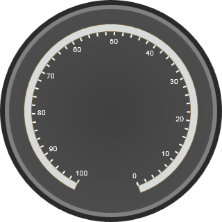

Ticks are called so because of the way they work in clocks. A tick helps you measure values. In gauges, the ticks are represented my marks on the face of the gauge.
The circular gauge displays two types of ticks:
· Major Ticks
These ticks specify the primary value intervals. The TickStyle property of the tick element specifies the number of the value intervals along the entire length of the scale bar.
You can specify the common properties (and appearance) for the major tick marks using the TickStyle property of the tick element by setting its value to Major Tick.
· Minor Ticks
These ticks are displayed a little smaller than the major ticks- these are the smaller values that allow you to measure values between the major ticks.
You can specify the common properties (and appearance) for the major tick marks using TickStyle property of the tick element, by setting its value to Minor Tick.
You can set the location of the ticks based on the scale position using the DistanceFromScale property and the TickPlacement property.
These properties, as well as the others needed to set the tick features, are tabulated below:
|
Property |
Description |
Type |
Data Type |
Reference links |
|
TickStyle |
Sets the tick style for the circular gauge tick |
Server-Side /Client-Side |
Enum The values are: · Major Tick · Minor Tick The default value is Major Tick. |
NA |
|
TickHeight |
Sets the height for the ticks |
Server-Side/Client-Side |
Double |
NA |
|
TickWidth |
Sets the width for the ticks |
Server-Side/Client-Side |
Double |
NA |
|
Angle |
Sets the angle for the ticks |
Server-Side/Client-Side |
Double |
NA |
|
TickPlacement |
Sets the placement for the ticks. |
Server-Side/Client-Side |
Enum The values are: · Far · Near · Center The default value is Far. |
NA |
|
DistanceFromScale |
Sets the distance of the ticks from the scale |
Server-Side/Client-Side |
Double |
NA |
|
TickColor |
Sets the color for the ticks |
Server-Side |
Color |
NA |
Methods for Ticks
|
Method |
Description |
Parameters |
Type |
Return Type |
Reference links |
|
SetTickAngle
|
Sets the angle for the tick |
ScaleIndex, TickIndex, Value |
Client-Side |
- |
NA |
|
SetTickStyle
|
Sets the style of the ticks |
ScaleIndex, TIckIndex, Value |
Client-Side |
- |
NA |
|
SetTickPlacement
|
Sets the placement of the tick element |
ScaleIndex, TickIndex,Value |
Client-Side |
- |
NA |
|
SetTickWidth
|
Sets the width of the tick |
ScaleIndex,TickIndex, Value |
Client-Side |
- |
NA |
|
GetTickHeight
|
Sets the height of the tick |
ScaleIndex,TickIndex, Value |
Client-Side |
- |
NA |
|
SetTickDistanceFromScale
|
Sets the tick distance from the scale |
ScaleIndex, TickIndex, Value |
Client-Side |
- |
NA |
Note: The properties for ticks in the circular and linear gauges are the same.
The code snippets for adding scale to the circular gauge is given as below:
|
[ASPX]
< syncfusion : CircularGauge AutoFormat ="Blend" FrameOuterWidth ="12" FrameInnerWidth ="6" ID ="CircularGauge1" runat ="server"> <Scales> <syncfusion:CircularScaleScaleBarSize="10"SweepAngle="315"StartAngle="115" LabelAutoAngle="true"> <Labels> <syncfusion:CircularGaugeLabelLabelPlacement="Near"/> </Labels> <Ticks> <syncfusion:CircularGaugeTickTickPlacement="Near"TickHeight="10"TickStyle="MajorInterval"/> <syncfusion:CircularGaugeTickTickPlacement="Near"TickHeight="5"TickStyle="MinorInterval"/> </Ticks> </syncfusion:CircularScale> </Scales> </ syncfusion : CircularGauge > |
|
[C#]
protected void Page_Load(object sender, EventArgs e) { BuildCircularGauge(); } privatevoid BuildCircularGauge() { CircularGauge gauge1 = newCircularGauge(); gauge1.ID = "CircularGauge1"; gauge1.AutoFormat = GaugeSkins.Blend;
CircularScale scale1 = newCircularScale(); scale1.Minimum = 0; scale1.StartAngle = 115; scale1.SweepAngle = 315; scale1.ScaleBarSize = 10; scale1.Maximum = 100;
CircularGaugeTick tick1 = newCircularGaugeTick(); tick1.TickStyle = TickStyle.MajorInterval; tick1.TickHeight = 10; scale1.Ticks.Add(tick1);
CircularGaugeTick tick2 = newCircularGaugeTick(); tick2.TickStyle = TickStyle.MinorInterval; tick2.TickHeight = 5; scale1.Ticks.Add(tick2);
CircularGaugeLabel label1 = newCircularGaugeLabel(); label1.LabelStyle = TickStyle.MajorInterval; label1.LabelPlacement = ScalePlacement.Near; scale1.Labels.Add(label1);
gauge1.Scales.Add(scale1);
this.Form.Controls.Add(gauge1); } |
|
[VB]
Private Sub Page_Load(ByVal sender AsObject, ByVal e As System.EventArgs) HandlesMyBase.Load BuildCircularGauge() End Sub
Public Sub BuildCircularGauge () Dim gauge1 AsNewCircularGauge() gauge1.ID = "CircularGauge1" gauge1.AutoFormat = GaugeSkins.Blend
Dim scale1 AsNewCircularScale() scale1.Minimum = 0
scale1.Maximum = 100 scale1.SweepAngle = 315 scale1.ScaleBarSize = 10
Dim tick1 AsNewCircularGaugeTick() tick1.TickStyle = TickStyle.MajorInterval tick1.TickHeight = 10 scale1.Ticks.Add(tick1)
Dim tick2 AsNewCircularGaugeTick() tick2.TickStyle = TickStyle.MinorInterval tick2.TickHeight = 5 scale1.Ticks.Add(tick1)
Dim label1 AsNewCircularGaugeLabel() label1.LabelStyle = TickStyle.MajorInterval label1.LabelPlacement = ScalePlacement.Near scale1.Labels.Add(label1)
gauge1.Scales.Add(scale1)
Me.Form.Controls.Add(gauge1) End Sub |
The output is given as follows:

Figure 44: Circular gauge with tick placement set to "near"